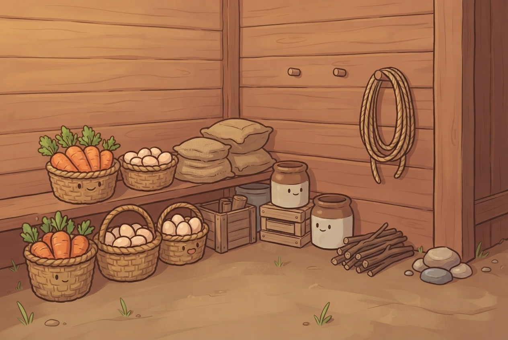
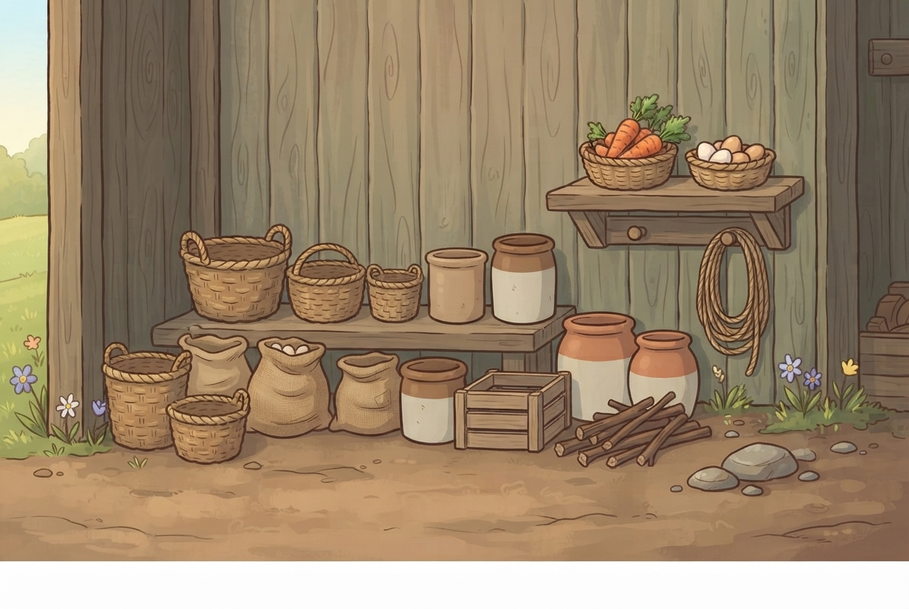

Green frame = the pick used in the game. To swap: python3 .claude/skills/openart-pictures/fetch.py pick window-storage <version>, then import again.


Painted full-bleed scene for the top of a window in a children's farming game: bright, friendly bold cartoon like the farm's sprites (thick rounded dark outlines, flat colours, simple cel shading, warm soft daylight), seen from eye height as if standing there, filling the whole frame edge to edge in a wide landscape format (3:2), the main thing in the middle with nothing important at the edges; green late spring, no snow; no text, no letters, no numbers (signs and labels blank); no farmer, no player character, no hands of the viewer; people only where the prompt asks for them, small and friendly. in the art style of reference image 1 (use it only for the style). a cosy farm storage corner against a wooden wall: woven baskets, burlap sacks, clay crocks and small crates in neat rows on the ground and on a low shelf, a few carrots and eggs in a basket, a coil of rope, a small pile of sticks and a few stones, warm light Every object is a plain ordinary object with no faces: no eyes, no smiles on baskets, jars or sacks. No text, no letters, no numbers, no captions; no people unless named; no frame, no border, the picture fills the whole image edge to edge.